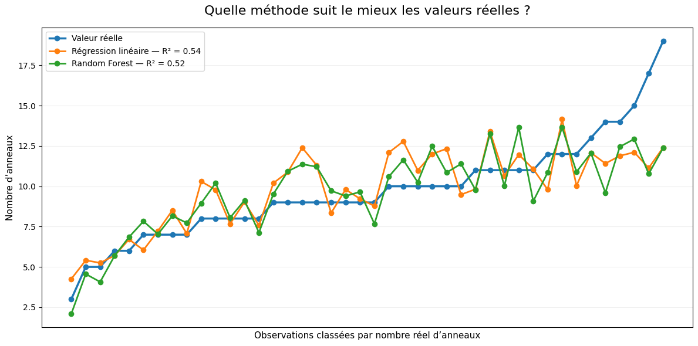
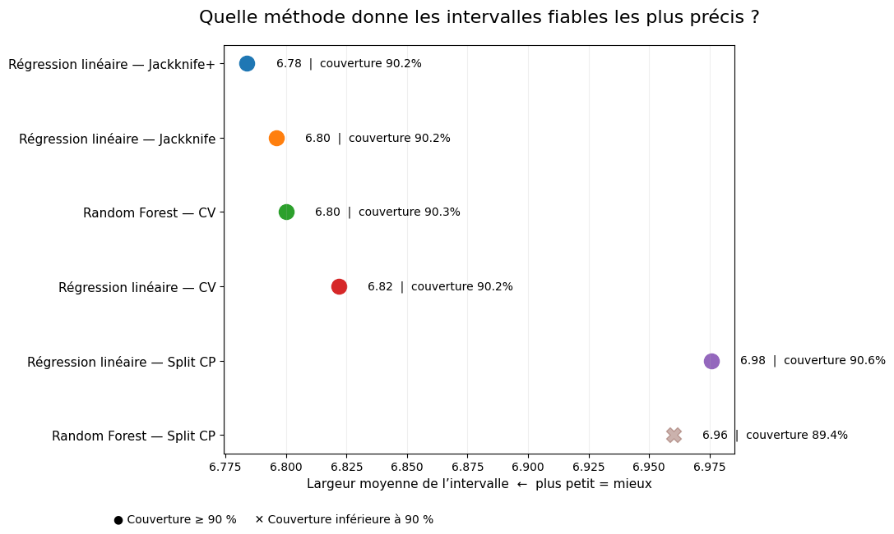

MACHINE LEARNING · UCI · PYTHON
Comparer les modèles,
pour mieux choisir
Quel modèle et quelle méthode d’incertitude offrent le meilleur compromis entre précision, fiabilité et coût de calcul ?
L’OBJECTIF
Comparer des prédictions, pas seulement des algorithmes
L’objectif de ce projet est de comparer plusieurs méthodes de prédiction sur un même problème, afin de comprendre ce qui permet réellement de choisir une approche plutôt qu’une autre.
La comparaison ne repose pas uniquement sur la précision moyenne des modèles. Je cherche également à mesurer l’incertitude autour des prédictions et à identifier les méthodes qui donnent des intervalles à la fois fiables et suffisamment précis.
Cette approche permet de dépasser la simple question « quel modèle obtient le meilleur score ? » pour regarder aussi la fiabilité et le coût de la méthode utilisée.
LES DONNÉES
Pourquoi utiliser les données Abalone ?
J’ai utilisé le jeu de données Abalone de l’UCI Machine Learning Repository, composé de 4 177 observations.
Chaque observation décrit un abalone à partir de plusieurs caractéristiques physiques : longueur, diamètre, hauteur, différents poids et sexe.
La variable à prédire est Rings, le nombre d’anneaux, utilisé comme indicateur de l’âge de l’animal.
Ce jeu de données est particulièrement adapté à une comparaison de méthodes : il s’agit d’un problème de régression, avec plusieurs variables explicatives, une variable catégorielle et suffisamment d’observations pour séparer proprement entraînement, calibration et test.
PRÉPARATION DES DONNÉES
Séparer apprentissage, calibration et évaluation
La variable catégorielle correspondant au sexe a d’abord été transformée afin de pouvoir être utilisée par les modèles.
Les données ont ensuite été séparées en trois ensembles : 2 505 observations pour l’entraînement, 836 pour la calibration et 836 pour le test.
Cette séparation permet de garder les données de test complètement à l’écart de l’apprentissage et d’utiliser un ensemble spécifique pour construire les intervalles de prédiction lorsque la méthode le nécessite.
PREMIÈRE COMPARAISON
Un modèle plus complexe n’est pas forcément meilleur
J’ai commencé par comparer deux approches : une régression linéaire et un Random Forest.
Le Random Forest est plus flexible et peut représenter des relations non linéaires. Pourtant, sur ces données, cette complexité supplémentaire n’améliore pas automatiquement la prédiction.
La régression linéaire obtient ici un R² de 0,54, contre 0,52 pour le Random Forest.
Les deux modèles suivent relativement bien la tendance générale, mais leurs prédictions deviennent moins précises pour les observations ayant un nombre d’anneaux particulièrement élevé.

Premier enseignement : choisir un modèle plus complexe n’améliore pas forcément la qualité des prédictions. Sur ce jeu de données, la régression linéaire reste légèrement plus performante.
AU-DELÀ DE LA PRÉDICTION
Une valeur prédite ne suffit pas toujours pour décider
Une prédiction ponctuelle donne une seule valeur, mais elle ne dit pas directement à quel point cette estimation est incertaine.
J’ai donc complété la comparaison avec plusieurs méthodes de Conformal Prediction, qui permettent d’associer un intervalle à chaque prédiction.
L’objectif fixé est une couverture d’environ 90 % : l’intervalle doit contenir la vraie valeur dans environ 90 % des cas.
Mais atteindre 90 % ne suffit pas. Un intervalle extrêmement large serait fiable, mais peu utile. Je cherche donc parmi les méthodes fiables celles qui donnent les intervalles les plus étroits.
COMPARAISON DES MÉTHODES
Fiabilité d’abord, précision ensuite
Plusieurs approches ont été comparées : Split Conformal, Jackknife, Jackknife+ et CV Conformal.
Pour sélectionner une méthode, j’utilise deux critères. Elle doit d’abord atteindre la couverture cible de 90 %, puis produire l’intervalle moyen le plus étroit possible.
Avec la régression linéaire, Jackknife+ offre actuellement le meilleur compromis : environ 90,2 % de couverture pour une largeur moyenne d’environ 6,78.
Le Random Forest avec CV Conformal donne un résultat très proche, avec environ 90,3 % de couverture et une largeur moyenne de 6,80.

RÉSULTATS INTERMÉDIAIRES
Toutes les méthodes ne donnent pas le même compromis
Les résultats montrent que plusieurs méthodes atteignent une couverture proche de la cible, mais avec des intervalles plus ou moins larges.
Le Split Conformal appliqué au Random Forest, par exemple, reste légèrement sous la cible de 90 %.
À l’inverse, Jackknife+ avec la régression linéaire combine une couverture suffisante avec l’intervalle moyen le plus étroit parmi les méthodes actuellement comparées.
UNE AUTRE CONTRAINTE : LE CALCUL
La meilleure méthode doit aussi être réalisable
La comparaison ne se limite pas aux performances statistiques.
Certaines méthodes comme le Jackknife nécessitent de réentraîner le modèle un grand nombre de fois.
Avec une régression linéaire, ce coût reste raisonnable. Avec un Random Forest, la même procédure devient beaucoup plus lourde à calculer.
Le Jackknife avec Random Forest n’a donc pas été retenu dans la comparaison finale actuelle. Cette contrainte fait partie du choix : une méthode doit être précise, fiable mais aussi exploitable.
PROJET EN COURS
La comparaison peut encore être approfondie
Les principaux modèles et plusieurs méthodes de Conformal Prediction ont déjà été comparés.
Les résultats actuels permettent d’identifier les premiers compromis entre précision, couverture et coût de calcul.
Le projet reste néanmoins ouvert : certaines méthodes plus coûteuses peuvent encore être optimisées ou approfondies, et la robustesse des conclusions peut être étudiée sur d’autres configurations.
CE QUE J’EN RETIENS
Le meilleur modèle n’est pas forcément le plus complexe
Sur les données Abalone, la régression linéaire obtient des performances légèrement meilleures que le Random Forest, malgré sa structure beaucoup plus simple.
L’ajout du Conformal Prediction montre également qu’un bon choix ne dépend pas d’un seul indicateur : il faut regarder simultanément la précision des prédictions, la couverture des intervalles, leur largeur et le coût de calcul.
Parmi les méthodes testées jusqu’ici, la combinaison régression linéaire + Jackknife+ offre le compromis le plus intéressant entre fiabilité et précision des intervalles.